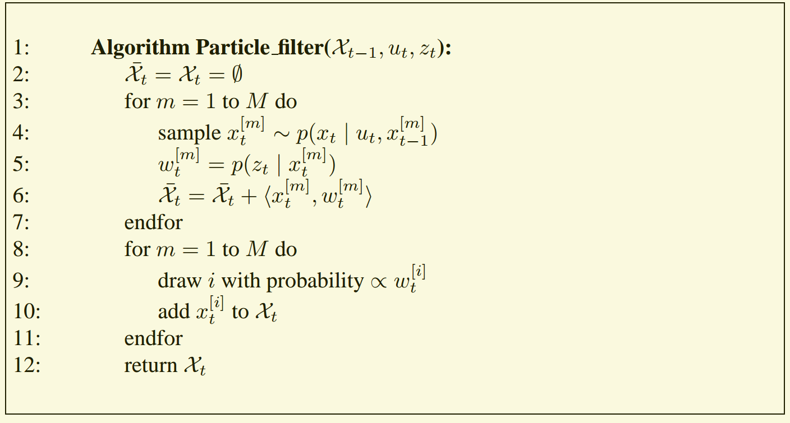
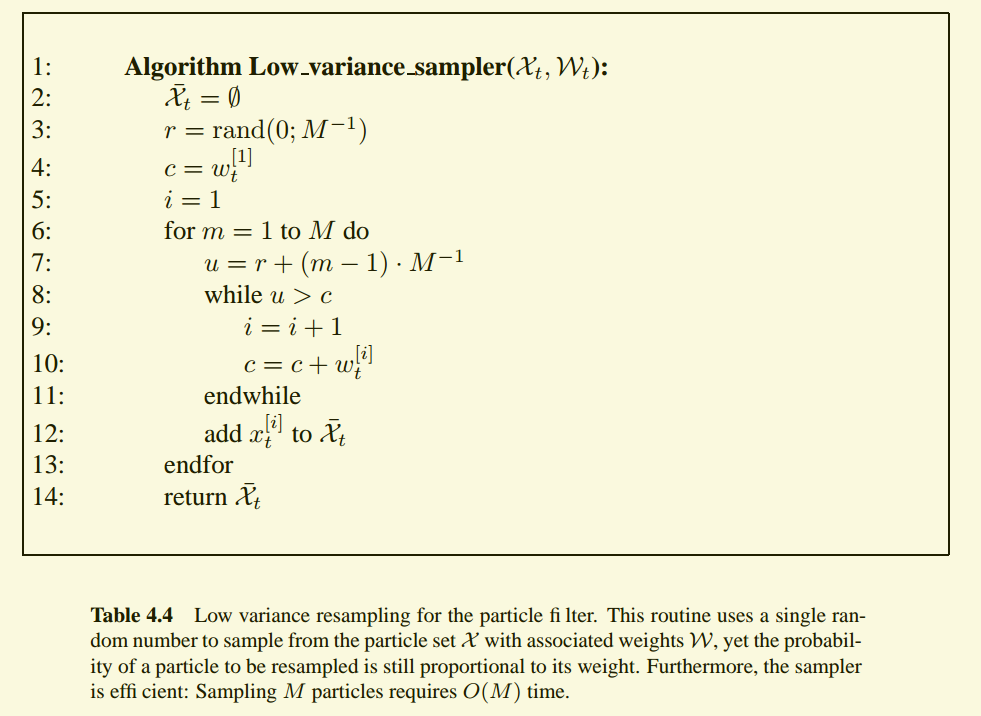
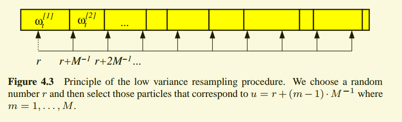
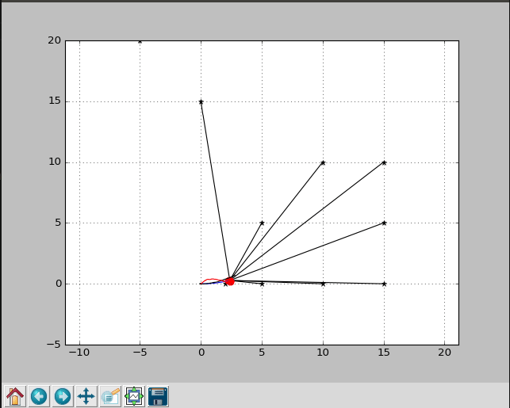

算法基础
粒子滤波是对贝叶斯滤波器的一种非参数实现。其核心思想就是,用对状态向量的加权采样集合表示后验$bel(x_t)$. 在粒子滤波中，后验分布的采样被称为粒子，可以表示为
$$
\mathcal X_t =
\begin{Bmatrix}
\left \langle
x_t^{[m]}, w_t^{[m]}
\right \rangle
\end{Bmatrix}_{m=1,2,\cdots ,M}
$$
每一个粒子$x_t^{[m]}$ ,$ 1\leq m\leq M$ ，表示状态$x$ 在时刻$t$ 时的一个假设，$w_t^{[m]}$ 表示该状态假设的权重。$M$表示采样集合$\mathcal X_t$的大小。
就像其他的贝叶斯滤波器算法，粒子滤波器算法通过$bel(x_{t-1})$ 递归得到$bel(x_t)$. 因为后验分布通过采样的集合表示,那么 $\mathcal X_t$ 递归地从$\mathcal X_{t-1}$获得。
粒子滤波算法的伪代码如下图所示。算法的输入为$t-1$时刻的粒子集合$\mathcal X_{t-1}$ ，最新的控制输入$u_t$,最新的观测$z_t$.

其中第4行，基于控制输入$u_t$以及$x_{t-1}^{[m]}$ 生成$t$时刻的状态假设$x_{t}^{[m]}$.
第5行，对于每一个粒子，计算权重。$w_t^{[m]}$ 表示在给定状态$x_t^{[m]}$,得到观测$z_t$的概率。
真正的trick 是在第8-10行。这一步是重采样过程。从临时集合$\bar {\mathcal X_t}$，按照粒子的权重抽样放到$\mathcal X_t$中,算法return。重采样过程便是达尔文适者生存法则，在概率上的应用，它将采样粒子集合重新集中在后验概率较高的位置。这样可以将算法的计算资源集中在状态空间中最重要的地方。
重采样算法的伪代码如下

该算法，只计算一个随机数$r$，然后根据该随机数选择粒子，每个粒子被选择的几率正比于其权重。
随机数$r$的取值范围为$[0,M^{-1}]$. 下图解释了重采样的执行过程。它的基本思想是，如果当前粒子的权重较大，那么就会多选择该粒子。

案例分析
下面的案例来自 python robotics.
在如下的例子中，我们利用 粒子滤波解决 机器人依靠路标点进行定位的问题。在代码中，作者的意思是利用RFID对机器人进行定位。利用RFID的优势是，机器人可以测量当前位置到具体的RFID的距离. 机器人在场景中按照固定的 v,w 进行运动，通过测量到多个RFID 的距离，对自身进行定位。
机器人采用的固定的 速度控制量，1.0ms，固定的角度度控制量 0.1 rad/s 进行运动 ，如代码所示。
1 | def calc_input(): |
环境中存在一定数量的RFID,并且机器人知道环境中RFID的具体位置。
1 | # RF_ID positions [x, y] |
定义机器人状态向量，包含机器人位置，旋转角度，以及当前速度，是一个4维的向量。
1 | # State Vector [x y yaw v]' |
定义粒子的集合以及权重，其中NP表示粒子集合的数目，在程序中我们定义的数值为1000
1 | px = np.random.rand(4, NP)*20 # Particle store |
粒子滤波定位过程,对于集合中每一个状态假设，根据运动模型计算机器人下一个时刻的位置。利用观测模型，计算该状态假设的权重。
测量信息z 记录了机器人到不同RFID的距离。如果在某一个状态假设下，我们只有很小概率拥有当前的测量值，那么该状态假设的权重就会减小。
1 | def pf_localization(px, pw, z, u): |
motion model 以及 observation model
1 | def gauss_likelihood(x, sigma): |
重采样算法
1 | def re_sampling(px, pw): |
程序的运行效果
